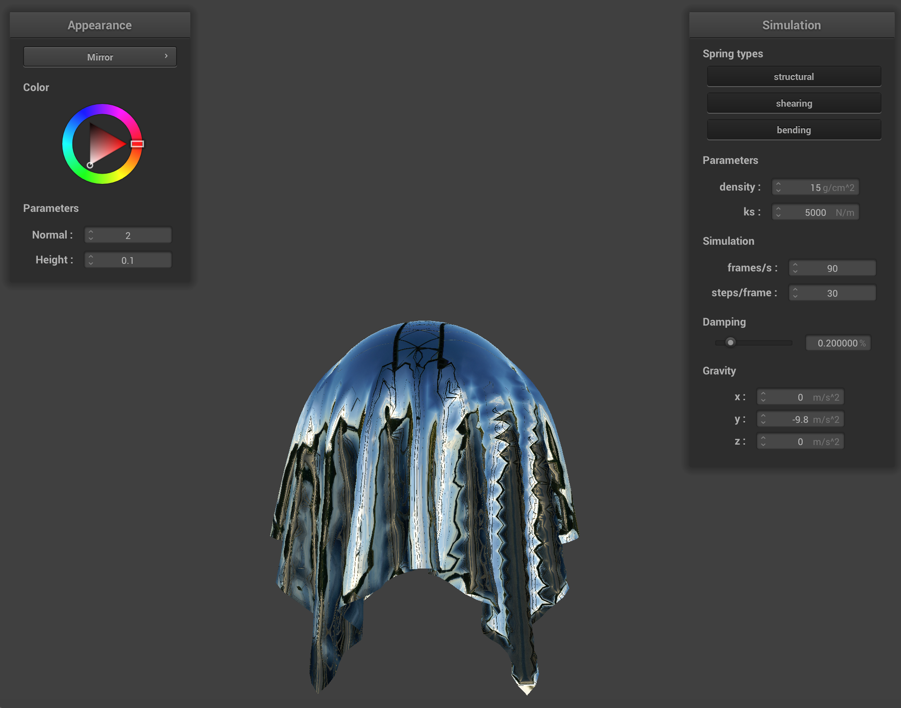

CS184/284A Spring 2025 Homework 4 Write-Up
Names: Xay Hanmonty
Link to webpage: cal-cs184-student/hw-webpages-xay-writeup
Link to GitHub repository: cal-cs184-student/sp25-hw4-xhw4

Overview
Give a high-level overview of what you implemented in this homework. Think about what you've built as a whole. Share your thoughts on what interesting things you've learned from completing the homework.Part 1: Masses and springs
In this part of the assignment, is the implementation of grid and mass where we try to achieve cloth representation with connection between the two. In this part we categorize the springs asSTRUCTURAL, SHEARING, and BENDING by connecting different points.
This can be achieved by splitting the cloth evenly into
num_width_points * num_height_points
point mass and store them into the dynamic array and adding three types
of the spring accordingly.

|

|

|
Part 2: Simulation via numerical integration
In this part, we have to simulate the physics on cloth for differentks, damping and density on all point masses and integrate
the position change via Velvet intergration. At first the force was calucalute using F = ma and then apply the total external forces into each point masses.
Verlet integration is done by saving the location for each point masses at the previous timestamp and use it to approximate velocity. then we made a constraint on the springs that they cannot extent more than 10% of their rest length to prevent overly extended springs.
Then at the end is compute the total force by adding up the global forces (e.g. gravity) and the internal forces using Hooke’s Law on the springs.
Below you can find the table showing adjusted value for spring constant, damping and density:
| --- | Low | Default Setting | High |
|---|---|---|---|
| ks |  |
 |
 |
| Density |  |
|
 |
| Damping |  |
|
 |
- Spring Constant (ks):
- Low ks: Cloth appears more stretchy and deforms easily
- High ks: Cloth is stiffer and maintains its shape better
- Density:
- Low density: Cloth moves more quickly and appears lighter
- High density: Cloth falls more heavily and shows more pronounced folds
- Damping:
- Low damping: More oscillation and bouncy movement
- High damping: Movement is more controlled and settles quickly

pinned4.json Final resting statePart 3: Handling collisions with other objects
For sphere collision handling, I implemented a method that detects when a point mass penetrates a sphere and corrects its position. The approach begins by calculating the vector from the sphere's origin to the point mass and determining its distance. If this distance is less than the sphere's radius and the point is not pinned, a collision has occurred. The handler first calculates a correction vector that pushes the point mass to the sphere's surface along the radial direction. This is achieved by finding the unit direction vector and scaling it by the difference between the radius and the current distance. For friction, the implementation analyzes the point's previous position relative to the sphere center, projects it onto the sphere's surface, and calculates a friction correction. The final position combines both the normal correction and friction effects, ensuring physically plausible behavior when cloth interacts with spherical objects.For plane collision handling, I implemented an approach that detects when a point mass crosses to the "inside" of a plane and corrects its position accordingly. The method calculates the signed distance from the point mass to the plane using the dot product between the point-to-plane vector and the plane's normal. A negative signed distance indicates that the point has penetrated the plane. When penetration is detected, the implementation projects the point mass back onto the plane by calculating the correct position on the plane's surface. From this projected point, a correction vector is computed between the point's last position and this projected point. This correction is scaled by (1-friction) to account for the friction effect of the plane material. The result is a physically plausible interaction where the cloth appears to slide realistically when contacting planar surfaces, with the friction parameter controlling how "sticky" or "slippery" the plane appears.
As you can see, the smaller the coefficient of the spring is, the more the cloth will dangle from the sphere. If ks is large, the internal force from the springs will hold the cloth from dangling more.
| ks | Images |
|---|---|
| 500 | |
| 5000 | |
| 50,000 |  |
Part 4: Handling self-collisions
First, I created a hash function that maps 3D positions to unique float values by dividing space into boxes of dimensions proportional to the cloth's physical properties. This function effectively groups nearby points into the same "bucket" for efficient collision checking. Next, I built a spatial map data structure by iterating through all point masses and placing them into appropriate buckets based on their hashed positions. The collision detection and resolution process then examines each point mass against potential collision candidates from the spatial map. When point masses are detected to be closer than twice the cloth thickness, a correction vector is calculated to push them apart to maintain proper separation. These individual correction vectors are averaged and scaled by the simulation steps factor to produce smooth, physically plausible movement while preventing cloth self-penetration. This spatial partitioning approach significantly improves performance by limiting collision checks to points that are potentially close enough to interact, rather than examining all possible point mass pairs, which would be computationally prohibitive for complex cloth simulations. |
A higher ks or a lower density will cause less number of folds to appear since the cloth will tend to preserve its original shape, while a lower ks or a higher density will cause it to fold faster and in more number of folds.
| --- | Low | Default Setting | High |
|---|---|---|---|
| ks |  |
 |
 |
| Density |  |
|
 |
Part 5: Shaders
In this part we implement a Shader programs, they are GPU-based code that render 3D graphics. Vertex shaders transform 3D points and pass data like positions and normals to fragment shaders, which calculate the final color for each pixel using lighting models and textures.In The Blinn-Phong shading model we used lighting model that simulates how light interacts with surfaces by breaking it down into three components. First is the ambient component which represents indirect light that bounces around a scene, providing a base level of illumination even to areas not directly lit. The diffuse component simulates light scattering evenly in all directions when hitting a rough surface, with brightness dependent on the angle between the surface normal and light direction (n·l). The specular component creates highlights on shiny surfaces by measuring how close the viewing angle is to the perfect reflection angle, approximated using the half-vector between the view and light directions (n·h). Each component is scaled by corresponding material coefficients (ka, kd, ks) that control the surface's reflective properties. When combined, these components create realistic lighting that can represent materials ranging from matte clay to polished metal.
In OpenGL, a .vert file contains vertex shader code written in (OpenGL Shading Language), which then process each vertex of a 3D model individually and apply transforms to the input vertex according to camera angels. To create the screenshots below which demonstrate each component individually and then combined, we would need to modify your .frag shader to isolate each component. For the ambient-only version, set the diffuse and specular contributions to zero. For diffuse-only, set ambient and specular to zero. For specular-only, set ambient and diffuse to zero. Then for the full model, I combined all three components together as implemented in current shader. We can make these changes temporarily in .frag file and run the program to capture each screenshot.
|
|
|
|
|

|
|
|
When the sphere’s mesh is coarse, displacement mapping performs poorly because the limited number of vertices can't accurately capture the abrupt height changes in the texture. There aren’t enough vertices to represent the height variation, especially at the texture's sharp transitions. However, in the bump render, the difference is much less noticeable. This is because the texture is mostly uniform, aside from the edges between bricks, allowing the renderer to effectively interpolate colors between vertices. If the texture were more detailed with frequent discontinuities, the performance gap between the coarse and fine meshes would become more significant.
|
|

|